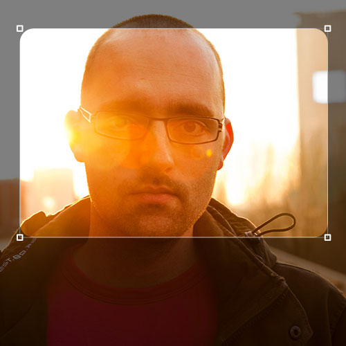
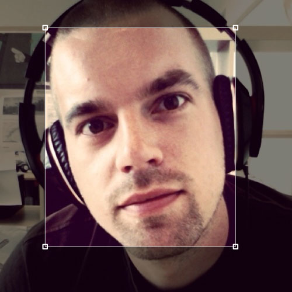

Light Up makes highlighting parts of an image easy while keeping the context of the image intact.
Use it to annotate screenshots or highlight parts of a website you're discussing.
Read the MacWorld review about Light Up (spoiler: 4 out of 5 mouses)
 Designer and co-founder of re:stacks. Reinier is a professional interaction designer who designed large projects in the Netherlands like the NOS app and the dutch FOX Sports website.
He also has a biweekly podcast Appels & Peren Show with Wietse Hage about Apple, tech and everything related.
 Developer and co-founder of re:stacks. By day Johan is lead developer for all Milq Media related projects, and by night working on apps like Traktable.
Contact us for support. Or follow us on Twitter @restacksapps